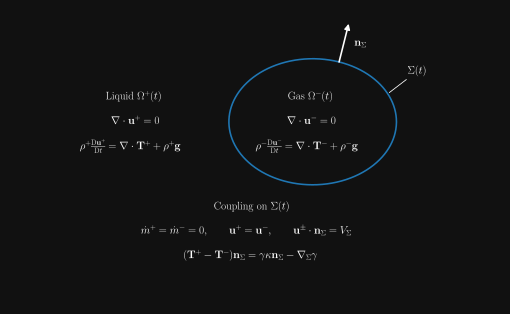
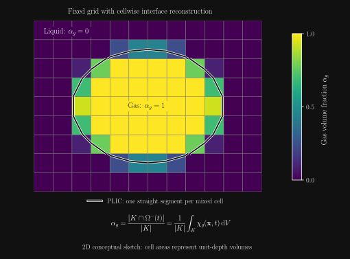
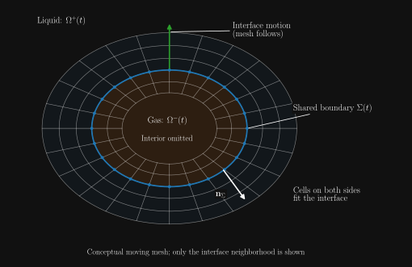
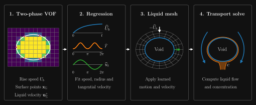
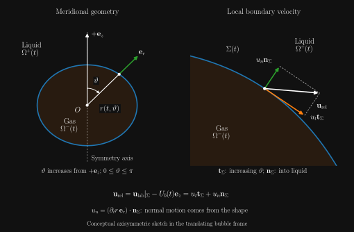
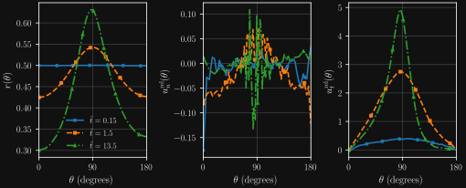
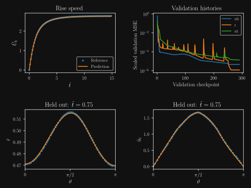

Machine Learning
in Fluid Mechanics
Lecture 5 — Surrogate models for continuous predictions
Andre Weiner
Chair of Fluid Mechanics
A thin layer controls the transfer

Source: Schlüter group, TU Hamburg · DFG SPP 1740 — Reactive Bubbly Flows
A thin layer controls mass transfer

Reynolds, Schmidt and Péclet numbers
A one-millimeter bubble in water
The sharp-interface model

Volume of fluid on a bulk grid

Interface tracking on a fitted mesh

Why combine these ideas?
From VOF to a liquid-only calculation

A radius for each polar angle

Regression forms that enforce known structure
Angular symmetry and the poles
From the learned radius to mesh motion and normal velocity
Inflow and transient species transport
Interface samples in Cartesian coordinates

Interface samples in polar coordinates

Checking the fits before deployment

From PyTorch to OpenFOAM
One flow, three Schmidt numbers
The moving mesh near the bubble
The close-up shows only a few cells across the steep concentration gradient. Mesh convergence still needs a refinement check.
Local and mean Sherwood numbers through t = 10

Lecture 5 review
What is the continuous prediction task in this lecture?
Learn the rise speed, radius and tangential liquid velocity as continuous functions of time and, where needed, polar angle.
What sets the concentration-layer shape?
Diffusion supplies dissolved gas normal to the interface, while advection carries it tangentially along the surface.
How are Reynolds, Schmidt and Péclet numbers related?
Reynolds compares inertia and viscosity. Schmidt compares momentum and species diffusivities. Their product is the Péclet number.
What does a high Schmidt number imply?
Momentum diffuses more readily than dissolved species, so the concentration layer can be much thinner than the velocity layer.
How thick is the mean concentration film in the water–oxygen example?
About 2.5 micrometres. Ten cells across it suggest a normal cell width of about 0.25 micrometres.
Which way does the lecture’s interface normal point?
From the gas domain into the liquid domain. The outward normal of the liquid-only bubble patch points into the gas void.
Does equal total mass flux imply equal normal velocities?
For phases with different densities, equal flux alone is insufficient. Setting both fluxes to zero gives equality with the normal interface speed.
What supplies tangential velocity continuity?
The assumption that the two fluids do not slip relative to each other along the interface.
What does the normal stress jump determine?
It relates the pressure traces, viscous normal stresses and capillarity at the interface. It gives no liquid-side normal pressure derivative.
How does VOF represent a mixed cell?
Its volume fraction is the cell average of the phase indicator. A local PLIC segment or plane reconstructs the interface.
Why use a fitted mesh for transport?
It aligns cells with the interface and allows fine interface-normal spacing where concentration gradients are steep.
What data pass from VOF to regression?
Bubble rise speed, reconstructed interface positions and liquid velocity samples at the interface.
When can shape be represented by one radius per angle?
When every ray from the chosen bubble center intersects the interface once. The example also assumes azimuthal symmetry.
Which velocity is projected onto the interface tangent?
The liquid velocity after subtracting bubble translation. The subtraction does not include local deformation velocity.
Why square the startup factor in the radius model?
The startup factor is zero initially. Squaring it makes both the radius correction and its time derivative vanish.
How does the tangential model vanish at the poles?
The sine factor vanishes at both poles. The cosine input gives the even part of the signed-angle extension.
Why derive normal velocity from the moving mesh?
It ties the boundary flux to the volume swept by the same mesh motion, preserving the kinematic condition in the discrete solve.
What does holding out entire snapshots test?
Temporal interpolation for the same bubble. It avoids mixing adjacent points from one interface into both the training and test sets.
How does the compiled model reach OpenFOAM?
PyTorch captures the model, AOTInductor compiles a PT2 package, and the OpenFOAM C++ boundary condition loads it with LibTorch.
How is the global Sherwood number computed?
OpenFOAM area-averages the local Sherwood values on the bubble patch, weighting each face by its area.